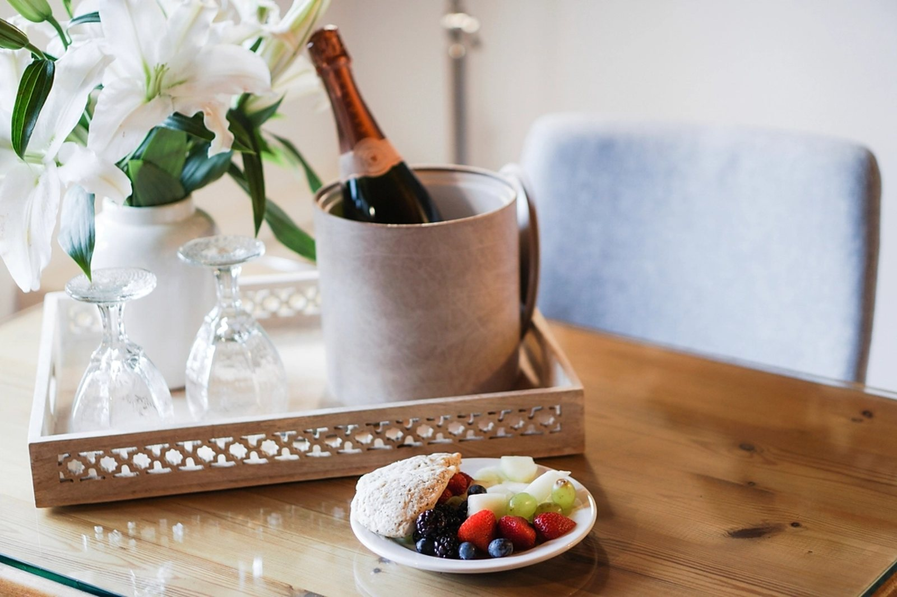
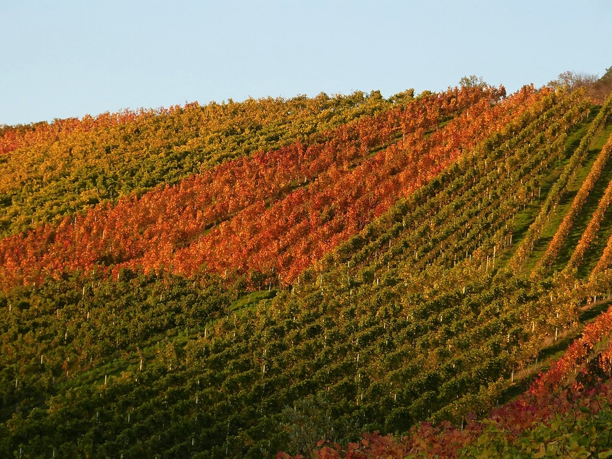

Esperienze
Ci sono vari modi in cui potete venire a trovarci, passando per una degustazione veloce quando siete in zona visitando le nostre colline in vacanza o i vostri giorni festivi, o prendendo un momento di relax per godere i nostri vini e prodotti tipici oppure per un pranzo o cena, semplice ma autentica in buona compagnia! Godete tutto nella nostra sala con una bella vista della Quartiere di Piave e in un ambiante che speriamo trovate accogliente è di famiglia.


Degustazione Classico
Venite a trovaci nella nostra sala di degustazione dove potete assaggiare 3 calice dei nostri vini, tra qui 2 Conegliano Valdobbiadene Prosecco DOCG. Servito con un piatto di sopressa e cestino di pane, tutto di nostra produzione!
Degustazione Buon Gustaio
Sempre nella nostra sala di degustazione dove potete assaggiare 3 calice dei nostri vini, tra qui 2 Conegliano Valdobbiadene Prosecco DOCG. I vini vengano serviti con un tagliere di varie affettate della nostra produzione, vedura in agrodolc, formaggi di piccole aziende locali con marmellata e/o miele e un cestino di pane fatto in casa con la nostra farina ‘Giorgione’!
Tour ‘dal Vigneto a Tavola’
Iniziamo nei nostri vigneti dove cerchiamo di rendervi consapevoli del lavoro che viene svolto nei nostri campi nell’arco dell’anno e la nostra filosofia lavorativa. Il discorso ci porta ad un adescizione della vendemmia, a quale momento scendiamo giù in cantina per una spiegazione della lavorazione dei nostri vini fino alla bottiglia. Tutto finisce, ovviamente, alla tavola nella nostra sala di degustazione dove potete assaggiare 4 calice dei nostri vini, tra qui 2 Conegliano Valdobbiadene Prosecco DOCG. I vini vengano serviti con un tagliere di varie affettate della nostra produzione e formaggi di piccole aziende locali con marmellata e/o miele, verdura in agrodolce e un cestino di pane fatto in casa con la nostra farina ‘Giorgione’!
Se cercate un posto accogliente per un pranzo o cena, ogni weekend apriamo, sul prenotazione, il nostro agriturismo con menù spuntineria, dove potete godere il massimo della nostra azienda. Il menu è semplice ma territoriale – nostro spuntino rustico prevede una selezione di affettati di nostra produzione a km, formaggi da piccole aziende agricole locali con miele e/o marmellate pane cotto nel nostro forno di legna* con farina di nostra produzione tipo 1, semi-integrale, varietà antica e resistente ‘Giorgione’, verdura del nostro orto in agrodolce, antipasti cotti a base di verdura o carne di stagione, dolce di casa e caffe.
Un calice di Casa Nova Brut poi vino sfuso e acqua inclusa. Vini spumanti e frizzanti possono essere acquistati a parte in calice o bottiglia.
Per i vostri occasioni più speciale, potete aggiungere i primi di stagione realizzati con i nostri prodotti e/o piatti di carne. Per vedere il nostro menu: clicca qua.
Per prenotare la tua esperienza o per ulteriore informazione, potete chiamare: